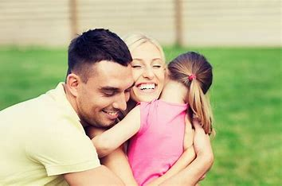
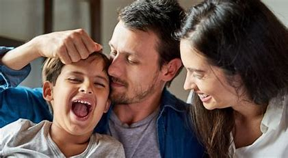

"Adotar sempre foi nosso sonho, mas o processo nos mostrou que estávamos recebendo muito mais do que oferecíamos. Quando conhecemos a Sofia, de 5 anos, foi como se nosso mundo se iluminasse. Ela trouxe alegria e propósito para nossas vidas. Não foi fácil no começo – ela tinha medo de confiar em nós –, mas com paciência e amor, construímos um vínculo profundo. Hoje, não conseguimos imaginar a vida sem ela." — Renata e Lucas, pais da Sofia.
 2."O amor transforma""Decidimos adotar o Pedro, de 9 anos, porque sentíamos que podíamos fazer a diferença na vida de uma criança mais velha. Muitos amigos nos questionaram sobre os desafios, mas a verdade é que ele transformou nossa família. Pedro nos ensinou sobre resiliência e gratidão. Ele nos mostrou que o amor, mesmo vindo depois de muitos anos, pode ser tão intenso quanto o de um recém-nascido. Hoje, ele é nosso orgulho e a razão pela qual acreditamos que a adoção é um ato de amor." — Fernanda e Rafael, pais do Pedro.
3."Nossa família nasceu do coração""Sempre ouvimos que adotar seria uma experiência transformadora, mas só vivendo para entender. Quando adotamos a Clara e o Tiago, irmãos de 7 e 10 anos, sabíamos que seria desafiador. Eles já tinham sua história e medos, mas, juntos, criamos uma nova história baseada no amor e no respeito. Hoje, somos quatro pessoas aprendendo e crescendo juntas. A adoção nos mostrou que o que nos une não é o sangue, mas o coração." — Camila e João, pais da Clara e do Tiago.
 4."Um encontro inesperado""Nós sempre imaginamos que adotaríamos um bebê, mas durante uma visita ao abrigo, conhecemos a Luana, uma adolescente de 13 anos. Ela nos olhou com uma mistura de esperança e desconfiança que partiu nossos corações. Naquele momento, soubemos que era ela. A convivência trouxe desafios, mas também ensinou a todos nós o valor da paciência e do diálogo. Hoje, a Luana é nossa filha e nos inspira com sua coragem e determinação." — Márcia e Roberto, pais da Luana.